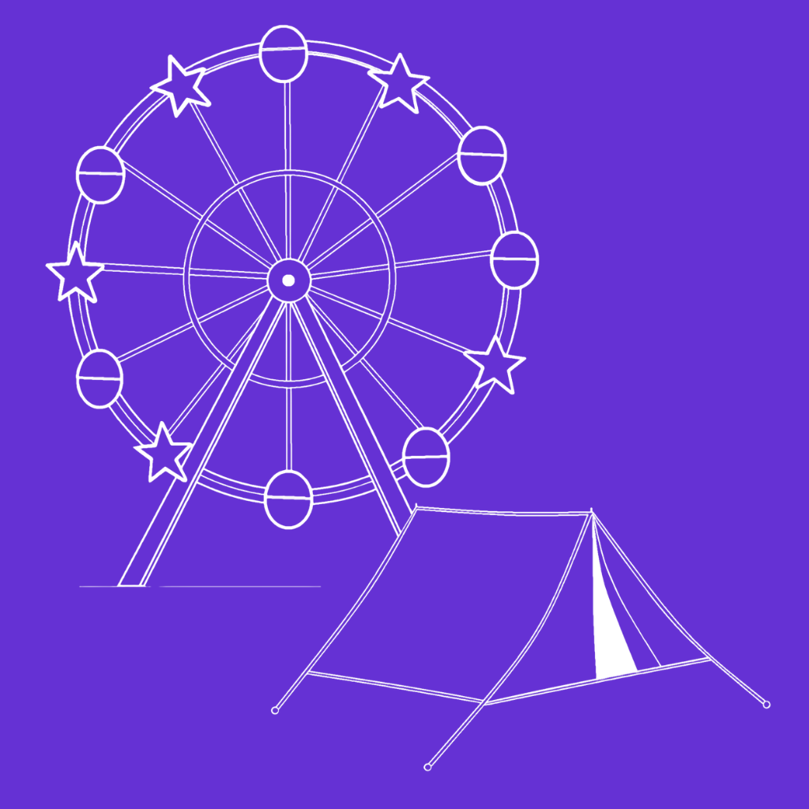
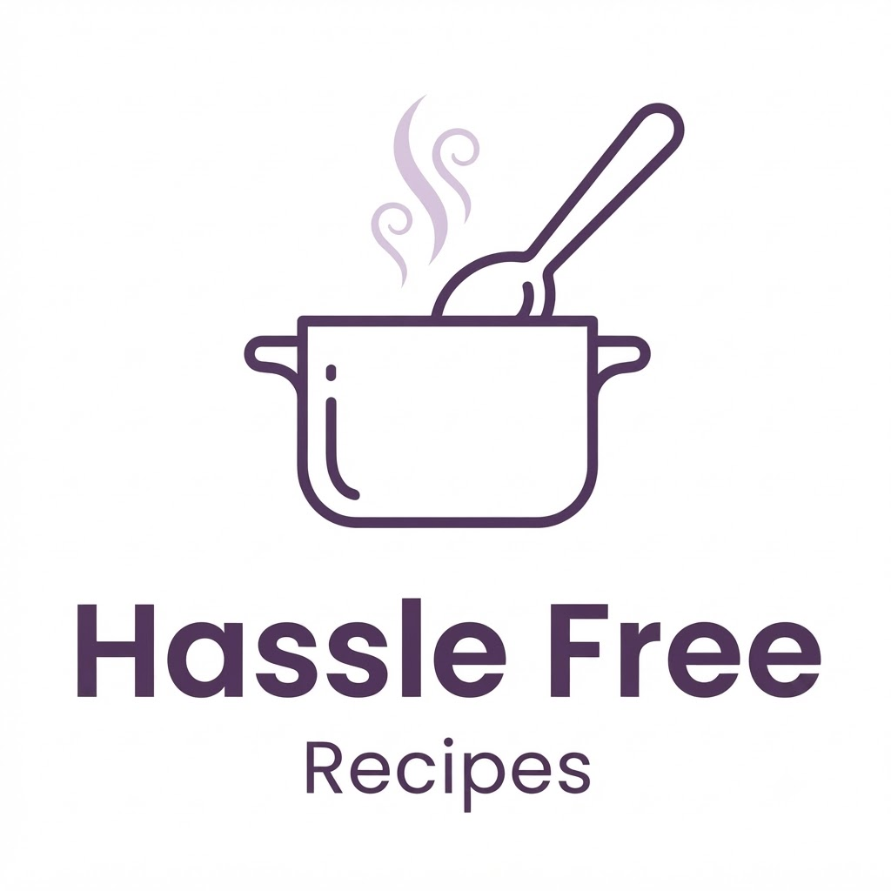

amongst friends
ios app
Rate and review anything, from restaurants to albums to books, with your friends.
Some stuff that I've made. Maybe I'll make more stuff.

Rate and review anything, from restaurants to albums to books, with your friends.

Your recipes with no ads and no disruptions, built for sanity and convience.
Experimentation with LLM music recomendations (hooked into AmongstFriends), exploring different agents with a heavy focus on eval agent.
see the eval analytics ↗A small, private assistant (agent) that prioritizes the opulence you deserve.
Experimenting with a harness that enforces TDD. Not particularly useful yet, but just for my own curiosity.
One album, picked for the day. I assure you it is worth listening to.
Season-by-season standings and stats for my pokémon draft league.